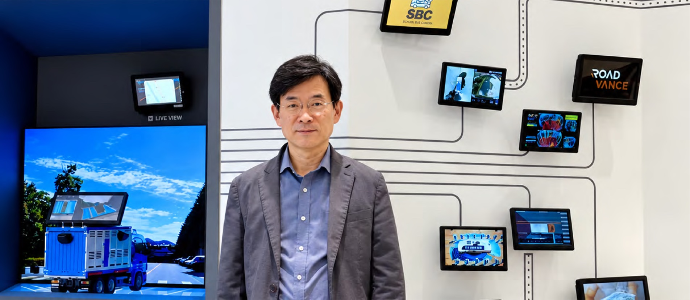
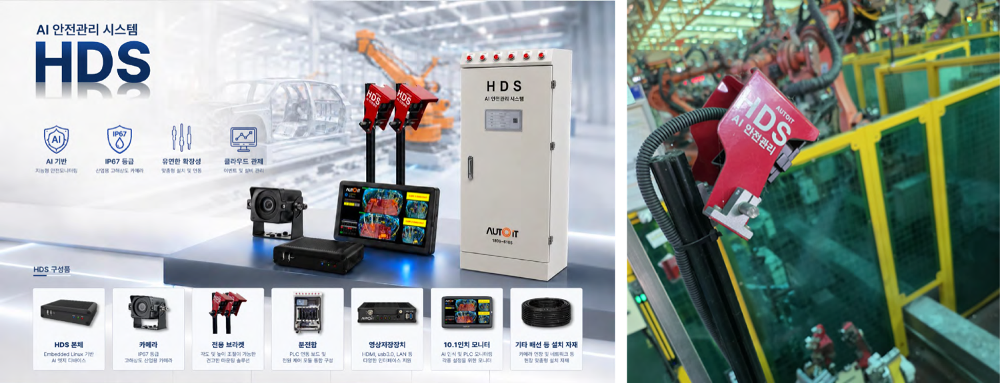
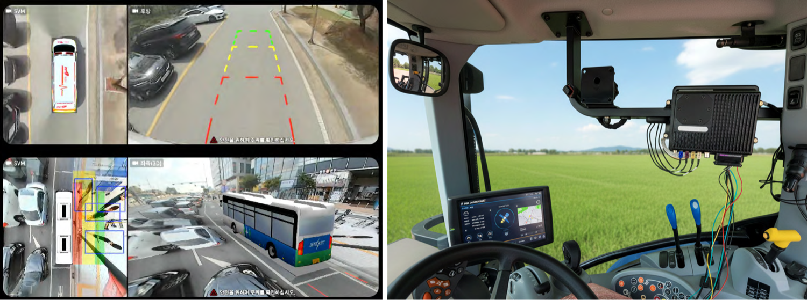
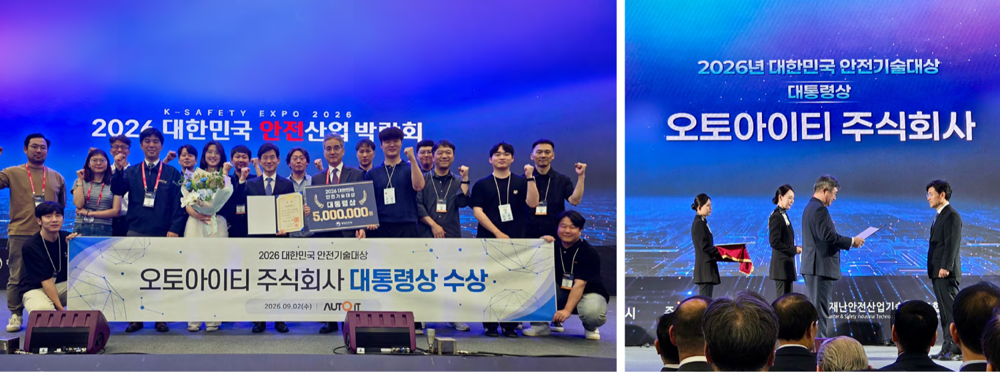
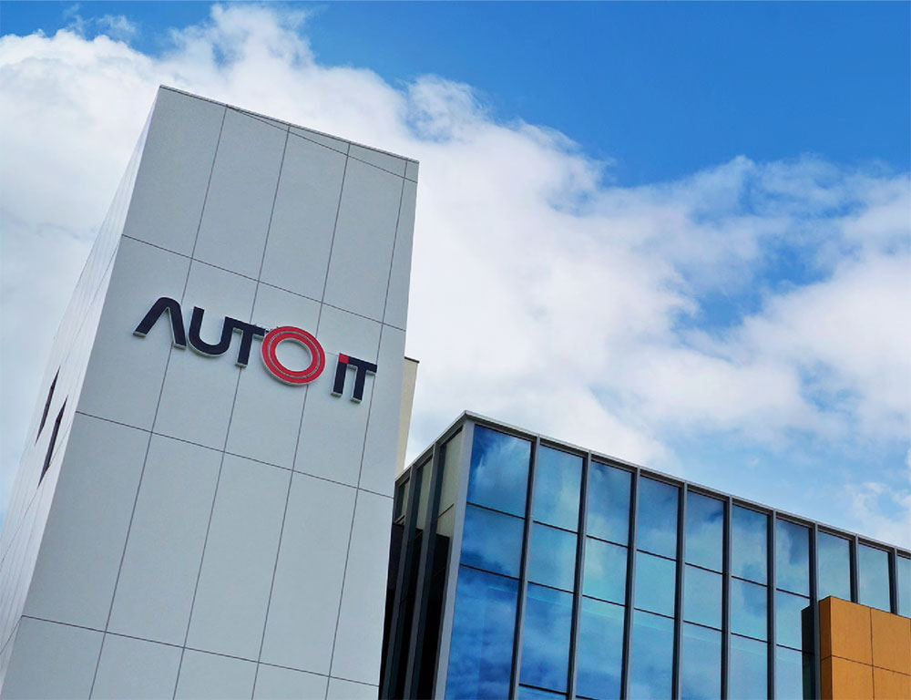

오토아이티가 2026 대한민국 안전기술대상에서 대통령상을 거머쥐었다. 수상작인 HDS(Human Detection System)는 카메라 영상을 엣지 AI가 실시간으로 분석해, 위험구역에 접근한 작업자를 감지하고 단 0.25초 만에 설비를 멈춰 세우는 사고예방 시스템이다. 자동차용 영상인식 기술에서 출발해 제조현장의 안전으로 영역을 넓힌 오토아이티는 AI와 ICT를 결합한 ‘AICT’ 비전으로 교통과 재난안전까지 아우르는 지능형 안전 인프라를 그리고 있다. 정명환 대표이사를 만나 수상의 의미와 HDS의 기술적 난제, 그리고 앞으로의 계획을 들었다.

Q. ‘2026 대한민국 안전기술대상’ 대통령상 수상을 축하드립니다. 먼저 수상 소감과 함께, 오토아이티가 어떤 회사인지 간략히 소개해 주세요.
큰 상을 받게 되어 매우 뜻깊게 생각합니다. 개발 과정에서 함께 노력한 임직원과 현장에서 기술을 적용하고 개선할 수 있도록 협력해 주신 고객사 관계자분들께 감사드립니다. 오토아이티는 AI와 ICT 기술을 기반으로 다양한 산업에 안전 솔루션을 제공하는 기업입니다. 저희가 지향하는 방향은 AI가 상황을 인지하고 위험을 판단해 실제 장비나 설비의 제어까지 연결하는 것입니다. AI 안전관리 시스템 HDS 역시 이러한 기술적 방향에서 탄생한 대표적인 산업안전 솔루션이죠.
Q. HDS 시스템이 높은 평가를 받은 핵심 요인이 무엇이라고 생각하시는지요.
일반적인 영상 기반 안전 시스템은 위험 상황을 촬영하거나 관리자에게 알려주는 역할에 머무르는 경우가 많습니다. 반면 HDS는 카메라 영상을 엣지 AI가 실시간으로 분석하고, 작업자가 위험구역에 진입하면 설비를 즉시 정지시킵니다. 즉, ‘감지-판단-경고-제어’가 하나의 시스템 안에서 이루어집니다. 또 하나는 실제 제조현장에 적용하면서 지속적으로 개선해 왔다는 점입니다. 제조현장에는 조명 변화, 그림자, 설비 움직임, 작업복, 작업자의 자세 등 AI 인식을 어렵게 만드는 변수가 매우 많습니다. 이러한 환경에서 실제 데이터를 확보하고 반복적으로 학습·검증하면서 현장 적용성을 높였습니다. 결국 높은 AI 인식 성능과 빠른 대응속도, 그리고 실제 생산설비와 연동할 수 있는 현장성이 결합된 것이 좋은 평가로 이어졌다고 생각합니다.
운전자에게 위험을 알려주는 기술을 개발하면서
“이 기술을 제조현장의 안전에도 적용할 수 있지 않을까”
라는 고민이 출발점
Q. HDS 시스템 개발에 뛰어들게 된 결정적인 계기는 무엇이었나요
오토아이티는 차량용 영상처리, 3D 어라운드뷰, AI 객체인식 기술을 오랫동안 개발해 왔습니다. 차량 주변의 사람이나 장애물을 인식해 운전자에게 위험을 알려주는 기술을 개발하면서 자연스럽게 “이 기술을 제조현장의 안전에도 적용할 수 있지 않을까”라는 고민을 시작했습니다. 특히 제조현장을 살펴보면 프레스나 로봇과 같이 사고가 발생했을 때 피해가 매우 큰 설비가 많습니다. 기존에는 안전펜스, 라이트커튼이나 각종 센서 등으로 작업자 접근을 통제했지만, 공정 특성상 사람이 설비 가까이에서 작업해야 하거나 작업 방식이 수시로 바뀌는 환경에서는 기존 방식만으로 대응하기 어려운 경우가 있었습니다. 저희는 ‘자동차 분야에서 축적한 기술 노하우를 산업안전에 적용하면 기존 안전장치를 보완할 수 있겠다’고 판단했고, 이것이 HDS 개발의 출발점이 되었죠.

Q. HDS는 사람 접근 감지부터 설비 정지까지 0.25초 만에 반응한다고 들었어요. 이런 반응속도를 구현하기 위해 어떤 기술적 난제를 해결하셨는지, 기존 방식과는 어떻게 다른지 쉽게 설명해 주신다면.
쉽게 설명하면 HDS는 ‘사람의 눈과 두뇌를 AI로 구현하고, 그 판단을 설비 제어까지 바로 연결한 시스템’이라고 할 수 있습니다. 카메라에서 영상을 받아 서버나 클라우드로 전송한 뒤 분석하면 통신과 처리 과정에서 지연이 발생할 수 있습니다. HDS는 현장에 설치된 엣지 AI 장치에서 영상을 직접 분석합니다. 사람이 위험구역에 진입했는지를 현장에서 바로 판단하기 때문에 빠른 대응이 가능합니다. 동시에 속도만 빠르다고 좋은 시스템은 아닙니다. 단일 프레임의 결과만으로 설비를 정지시키면 순간적인 오검출 때문에 생산라인이 불필요하게 멈출 수 있습니다. 그래서 HDS는 연속 영상에서 사람의 존재 여부와 위치를 확인하는 방식으로 신뢰도를 높이면서도 전체 판단 시간을 최소화하도록 최적화했습니다.
기존 안전펜스는 물리적으로 작업자의 접근을 차단한다는 장점이 있고, 라이트커튼이나 근접센서는 정해진 영역에서 빠르게 물체를 감지하는 장점이 있습니다. HDS는 AI 비전을 이용해 ‘사람인지 아닌지’, ‘어느 위치에 있는지’, ‘설정된 위험구역에 들어왔는지’를 판단할 수 있다는 점에서 기존 장치를 보완하고 안전성을 높이는 역할을 합니다. 특히 위험구역을 현장 관리자가 설정할 수 있기 때문에 설비나 작업환경이 변경되더라도 소프트웨어적으로 감시영역을 조정할 수 있다는 장점이 있습니다.
Q. HDS는 2022~2023년 국내 자동차 제조라인에 처음 도입됐다고 알고 있습니다. 실제 현장에 처음 적용했을 때 어떤 어려움이 있었고, 이를 어떻게 극복하셨는지요.
HDS는 초기 개발과 검증 과정에서 자동차 제조현장을 중심으로 실제 적용 가능성을 검증했고, 이후 완성차 및 자동차 부품 제조현장으로 적용 범위를 확대해 왔습니다. 가장 어려웠던 부분은 연구실과 실제 생산현장의 차이였습니다. 현장에서는 조명이 일정하지 않고, 설비가 움직이면서 그림자가 발생하며, 작업자가 몸을 숙이거나 설비에 일부가 가려지는 경우도 많았습니다. 작업복이나 안전모 등도 다양하기 때문에 일반적인 사람 인식 데이터만으로는 충분하지 않았습니다. 특히 프레스 공정과 같이 대형 설비가 반복적으로 움직이는 환경에서는 AI가 작업자와 주변 환경을 안정적으로 구분하면서도 생산에 영향을 주는 불필요한 정지를 최소화해야 했습니다.
이를 해결하기 위해 실제 현장에서 다양한 작업 상황의 데이터를 확보하고 AI 모델을 반복적으로 학습했습니다. 또한 위험구역을 설정하고, 단순히 한 번의 검출 결과만 사용하는 것이 아니라 연속 프레임의 결과를 확인하는 방식으로 신뢰성을 높였습니다.
결국 현장 설치 → 데이터 확보 → AI 학습 → 현장 검증 → 알고리즘 개선 과정을 반복하면서 현재의 HDS 시스템으로 발전시킬 수 있었습니다. 향후에는 현장에서 수집된 데이터를 중앙에서 관리하고 필요한 데이터를 선별·라벨링해 AI 모델을 재학습한 뒤 OTA(Over The Air, 무선 소프트웨어 업데이트) 방식으로 현장의 HDS에 업데이트하는 체계까지 고도화할 계획입니다.
사고 발생 후 대응하는 방식에서 벗어나
위험 상황 자체를 데이터로 관리할 수 있게 됐다는 점
Q. HDS 도입 이후 산업재해 예방이나 안전관리 효율 측면에서 확인된 구체적인 변화가 있었을까요?
대표적인 적용 현장 중 하나인 자동차 차체 제조현장에서는 HDS 도입 이후 해당 적용 구간에서 현재까지 안전사고가 발생하지 않고 운영되고 있습니다. 특히 의미가 있는 부분은 사고가 발생한 뒤 영상을 확인하는 사후관리 방식에서 벗어나 위험 상황 자체를 데이터로 관리할 수 있게 됐다는 점입니다. 예를 들어 작업자가 위험구역에 얼마나 자주 접근했는지, 어느 시간대에 위험 이벤트가 많이 발생했는지, 설비 정지나 경고가 얼마나 발생했는지를 기록할 수 있습니다. 관리자는 이러한 데이터를 이용해 반복적으로 위험이 발생하는 공정이나 작업방식을 찾아 개선할 수 있습니다. 앞으로는 이러한 데이터를 활용해 사고뿐만 아니라 ‘아차사고’, 즉 사고로 이어질 가능성이 있었던 위험상황까지 정량화하고 분석하는 방향으로 발전시키고 있습니다.

Q. 오토아이티의 스마트 모빌리티·팩토리·스마트팜 3축의 솔루션 중 재난안전산업으로 확장 적용할 수 있는 기술이나 계획이 있다면?
저희가 가진 기술의 공통점은 ‘센서로 현장을 인지하고, AI가 판단하고, 통신을 통해 정보를 공유하며, 필요한 경우 장비를 제어한다’는 것입니다. 따라서 산업안전뿐만 아니라 재난안전 분야로 확장할 가능성이 매우 높다고 보고 있습니다. 스마트 모빌리티 분야에서는 AI 기반 3D 어라운드뷰를 통해 차량 주변의 사람이나 장애물을 인식하고 충돌 위험을 알려주는 기술을 보유하고 있습니다. 버스와 상용차뿐만 아니라 건설기계, 농기계, 군용차량 등 시야 확보가 어려운 특수차량의 안전에도 적용할 수 있습니다. 스마트 팩토리 분야에서는 HDS를 중심으로 작업자의 위험구역 진입뿐만 아니라 화재·연기, 작업자 안전수칙 미준수, 설비 이상 등 다양한 위험상황을 AI가 이해하는 방향으로 기술을 확대하고 있습니다. 향후에는 카메라뿐만 아니라 레이더와 열화상 등 서로 다른 센서를 결합하는 멀티모달 센싱 기술을 강화할 계획입니다. 가시광 카메라가 취약할 수 있는 야간이나 연기, 악천후 등의 환경에서도 보다 안정적으로 상황을 인지하기 위한 것입니다. 궁극적으로는 여러 현장의 안전정보를 통합 관제하고 위험을 사전에 예측하는 지능형 재난안전 플랫폼으로 발전시키는 것이 목표입니다.
Q. 2025년 ‘삼백만불 수출의탑’을 수상하는 등 해외 성과도 있었습니다. 주요 수출 국가·분야와, 해외 시장에서 HDS·AI 안전기술이 특히 경쟁력을 갖는 지점은?
오토아이티는 차량용 영상기기와 안전시스템을 중심으로 해외시장을 지속적으로 확대해 왔으며, 이러한 성과를 바탕으로 2025년 삼백만불 수출의탑을 수상했습니다. 기존 해외사업이 차량용 영상장치와 모빌리티 안전제품 중심이었다면 앞으로는 HDS와 같은 AI 산업안전 솔루션을 새로운 수출 품목으로 육성하려고 합니다. 특히 국내 자동차 및 제조기업과 함께 축적한 현장 적용 경험을 바탕으로 미국을 비롯해 호주, 영국 등으로 사업기회를 확대하고 있습니다. 해외시장에서의 경쟁력은 AI 알고리즘, 엣지 하드웨어, 카메라, 통신, 관제 및 설비 연동까지 하나의 시스템으로 구현할 수 있다는 점이라고 생각합니다. 또한 제조현장은 국가가 달라도 사람과 설비가 함께 작업하는 과정에서 발생하는 안전 문제라는 공통점이 있습니다. 국내의 까다로운 자동차 제조현장에서 축적한 데이터를 기반으로 다양한 환경에 대응할 수 있도록 제품을 고도화한다면 해외에서도 충분한 경쟁력이 있다고 보고 있습니다.
오토아이티 기술의 공통점은 ‘센서로 현장을 인지하고,
AI가 판단하고, 통신을 통해 정보를 공유하며,
필요한 경우 장비를 제어한다’는 것
Q. 향후 1~2년 내 오토아이티가 선보일 신제품이나 R&D 방향이 있다면 소개해 주세요.
가장 집중하려는 부분은 HDS를 ‘상황을 이해하는 AI’로 발전시키는 것입니다. 현재 딥러닝 기반 객체검출 기술은 사람을 빠르고 정확하게 찾는 데 매우 효과적입니다. 앞으로는 여기에 VLM(Vision Language Model) 등 차세대 AI 기술을 접목해 “작업자가 안전수칙을 지키고 있는가”, “정상적인 작업절차를 수행하고 있는가”, “현재 상황이 사고로 발전할 가능성이 있는가”까지 이해할 수 있도록 연구하고 있습니다. 또한 카메라와 레이더, 열화상 센서 등을 융합하여 카메라 단독으로 판단하기 어려운 환경에서도 안전성을 확보하는 멀티센서 융합 기술을 개발하고 있습니다. 중요한 방향 중 하나는 기존 HDS에 대한 소프트웨어 업그레이드입니다. 새로운 AI 기능이 필요할 때마다 장비 전체를 교체하는 방식이 아니라 기존 엣지 장비의 연산자원을 최대한 활용하고, 필요한 경우 AI 가속기를 추가하여 새로운 기능을 소프트웨어 중심으로 적용할 수 있도록 하는 것입니다.

Q. 국내 재난안전산업 생태계에서 중소·중견 기술기업이 성장하기 위해 가장 필요한 정책적·제도적 지원은 무엇이라고 생각하시나요.
재난안전 기술은 실제 현장에서 충분히 실증하고 신뢰성을 입증할 수 있는 기회가 중요합니다. 특히 AI 안전기술은 현장 데이터를 확보해야 성능을 높일 수 있지만, 중소·중견기업이 대규모 산업현장에서 장기간 실증할 기회를 확보하기는 쉽지 않습니다. 따라서 정부와 공공기관이 수요기업과 기술기업을 연결해 실증 → 성능검증 → 인증 → 조달 → 사업화로 이어질 수 있는 체계를 강화해 주셨으면 합니다. 두 번째는 AI 기반 안전제품에 적합한 평가·인증체계입니다. 기존의 안전기준은 하드웨어 센서나 기계적인 안전장치를 기준으로 만들어진 경우가 많습니다. AI 영상분석이나 멀티센서 융합처럼 새로운 기술의 특성을 반영할 수 있는 성능평가와 표준화가 필요합니다.
마지막으로 해외 진출을 위한 인증과 실증 지원입니다. 중소기업 입장에서는 국가별 인증과 현지 실증에 상당한 비용과 시간이 필요합니다. 국내에서 검증된 우수 재난안전 기술이 해외시장까지 진출할 수 있도록 인증, 현지 PoC(Proof of Concept, 실증), 해외 수요처 연계까지 지원한다면 국내 재난안전기업의 성장에 큰 도움이 될 것이라고 생각합니다.
Q. 오토아이티의 비전이 구체적으로 실현되는 중장기 로드맵은?
오토아이티가 생각하는 AICT(AI+ICT)는 AI가 현장을 이해하고 ICT가 각각의 장비와 현장을 연결해 하나의 지능형 안전 인프라를 만드는 것입니다. 저희가 궁극적으로 만들고 싶은 것은 ‘사고가 발생하기 전에 위험을 인지하고 예방하는 인프라’입니다. 이번 대한민국 안전기술대상 대통령상 수상을 하나의 출발점으로 삼아, 오토아이티의 AICT 기술이 제조현장을 넘어 교통과 재난안전 분야까지 사람의 생명을 보호하는 기술로 확장될 수 있도록 지속적으로 연구개발하겠습니다.
